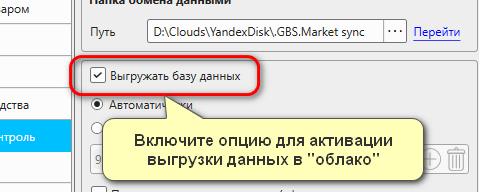

Кассовая программа GBS.Market может обмениваться данными между несколькими торговыми точками. Например, такой обмен может использоваться для:
- Получения данных в режиме "Дом/офис"
- Обмена покупателями между торговыми точками
- Перемещения товаров между торговыми точками
- Просмотр остатков других торговых точек
Для обмена данными между компьютерами используются облачные сервисы ("облака"). Пример таких сервисов: Яндекс.Диск, Dropbox, Google.Диск и т.п.
Рассмотрим процесс настройки выгрузки данных в облако на примере Яндекс.Диска
Установка программы "облако"
Для синхронизации данных может использоваться любой из сервисов:
- Яндекс.Диск рекомендуем
- Dropbox
- Mail.Ru облако
- Google.Диск
- OneDrive
и сервисы, предоставляющие аналогичную функциональность.
Процесс установки "облака" описан в статье на примере Яндекс.Диска. Установить "облако" необходимо на всех компьютерах, которые будут участвовать в обмене данными.
Полезные материалы
Важно!
Вход в аккаунт в "облаке" необходимо выполнить под одной учетной записью (логином) на всех используемых компьютерах. В противном случае данные не будут синхронизироваться!
Создание папки для синхронизации
Откройте папку "облака" и создайте в ней новую папку с названием, например, GBS.Market sync
Если вы правильно создали папку, то она отобразиться и на других компьютерах, на которые установлено "облако" и выполнен вход в этот же аккаунт.
Включить загрузку папки на компьтер
Важно
Некоторые "облака", в частности Яндекс.Диск позволяют экономить место на компьютере за счет того, что данные хранятся только в "облаке", но не загружаются на компьютер. Для корректной работы синхронизации необходимо выполнить описанные ниже действия.
Для того, чтобы файлы в папке обмена загружались на компьютер, а это необходимо для корректной работы синхронизации, нажмите на папке правой кнопкой мыши и выберите "Сохранить на компьтере"
Иконка на папке должна принять вид зеленой галочки.
Настройка программы
После настройки облака необходимо перейти к настройке GBS.Market. Из главной формы в меню откройте Файл – Настройки
Далее перейдите на вкладку "Удаленный контроль" и нажмите кнопку "обзор" ( … ) в разделе "Папка обмена данными"
Выберите папку, которая была создана ранее и нажмите "Ок"
Выгрузка данных
Включите опцию "Выгружать базу данных"
Далее необходимо выбрать подходящий режим обмена данными и указать параметры обмена.

Автоматически
Если выбран тип выгрузки "автоматически", то выгрузка базы данных будет происходить при определенных изменениях, а именно:
- Сохранение документа "продажа"
- Сохранение документа "накладная"
Важно
Если в торговой точке используется мобильный интернет, то вариант "Автоматически" может приводить к большому потреблению трафика. В таких случаях рекомендуется использовать выгрузку по расписанию.
По времени
Выгрузка данных по времени позволяет установить конкретные временные моменты, когда программа будет выгружать данные.
Добавление времени
Нажмите на кнопку ( + ) , введите время для отправки данных и нажмите "Добавить", чтобы оно появилось в списке.
Удаление времени
Для удаления одной записи – нажмите крестик рядом с ней. Для удаления всех записей, нажмите кнопку с изображением корзины.
Проверить выгрузку
После того как все настройки указаны, сохраните их. Далее необходимо проверить, работает ли выгрузка. Нажмите "Выгрузить файл", чтобы программа начала выгрузку данных в облако.
Программа сообщит об успешной выгрузке данных

Затем нажмите кнопку "Перейти", чтобы открыть папку, через которую происходит обмен данными.
Если файлы появились, значит все сделано верно и обмен данными работает.
Выполните настройку остальных компьютеров
Подобным образом необходимо выполнить настройку остальных компьютеров, которые будут участвовать в обмене данными.
Важно:
- Учетная запись в "облаке" на всех компьютерах должна быть одна
- Должна использоваться одна папка обмена для всех компьютеров
Решение проблем синхронизации
Если вы столкнулись с проблемами обмена данными, ознакомьтесь с рекомендациями.